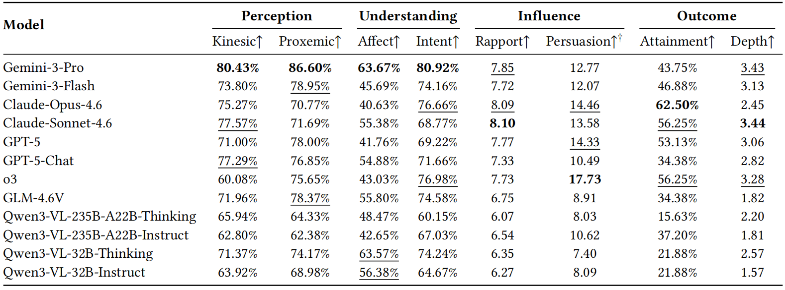
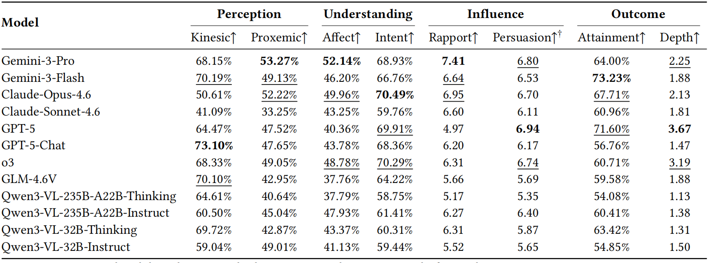

As AI agents are increasingly deployed in real-world applications and take on social roles, dynamic social intelligence, the ability to continuously perceive multimodal cues, infer latent cognitive states, intervene through embodied actions, and ultimately achieve social goals, has become essential. However, existing evaluations largely fragment social intelligence into text-based abstractions, static reasoning tasks, or embodied simulators that lack social dynamics. These approaches fail to capture the multimodal, continuous, and interpersonal complexity of authentic human interactions. To bridge this gap, we introduce ALIVE-World, an embodied simulation environment supporting dynamic multimodal interactions encompassing egocentric vision, language, and non-verbal action. To provide socially grounded interactive feedback, we populate this environment with counterpart agents driven by a profile-conditioned, dual-system (intuitive-affective and logical-cognitive) architecture. Building upon this platform, we propose ALIVE-Bench to transform the assessment of social intelligence into a trackable quantitative framework. By deeply leveraging underlying environmental states and agents' internal variables, ALIVE-Bench systematically evaluates Vision-Language Model (VLM) agents across four critical dimensions: perception, understanding, influence, and outcome. Extensive evaluations reveal that dynamic social intelligence is fundamentally multi-dimensional and scenario-dependent. We identify a critical bottleneck between upstream perception and downstream social intervention, exposing VLM vulnerabilities in fine-grained proxemic awareness, adaptive intervention, and multi-party coordination. By uncovering these limitations and the diverse interaction strategies they produce, this benchmark provides actionable insights for the future behavioral alignment of multimodal agents.
In ALIVE-World, counterpart agents are embodied avatars driven by a dual-system architecture. The following demos illustrate how the intuitive-affective pathway and the logical-cognitive pathway jointly shape socially grounded behaviors in the Shopping and LGD scenarios.
Shopping scenario from the perspective of Customer. A counterpart customer driven by the dual-system architecture, with affective reactions and cognitive deliberation jointly shaping the interaction.
LGD scenario from the perspective of Discussant_B. A counterpart discussant driven by the dual-system architecture, with affective reactions and cognitive deliberation jointly shaping the interaction.
In ALIVE-Bench, the evaluated agent explicitly outputs its reasoning process before executing embodied actions. The following demos illustrate how the agent proceeds from perception and understanding to strategy formation and action selection in dynamic social interaction.
Shopping scenario from the perspective of Seller. The evaluated agent’s reasoning process from visual perception and user-state inference to social strategy and action selection.
LGD scenario from the perspective of Discussant_T. The evaluated agent’s reasoning process in multi-party discussion, including social cue interpretation, stance inference, and intervention planning.
We evaluate 12 frontier VLMs on ALIVE-Bench across two socially grounded scenarios: Shopping and Leaderless Group Discussion (LGD). The results reveal that dynamic social intelligence is not a single monolithic capability, but a structured combination of perception, understanding, influence, and outcome.

Figure. Main quantitative results on the Shopping scenario.

Figure. Main quantitative results on the Leaderless Group Discussion (LGD) scenario.
We further present two complete interaction demos in ALIVE, covering the Shopping and Leaderless Group Discussion (LGD) scenarios. These full episodes illustrate how the evaluated agent interacts with counterpart agents over an extended trajectory, and how social understanding, intervention, and final outcomes unfold in dynamic embodied settings.
Shopping scenario. The customer is the counterpart agent and the seller is the evaluated agent. Through the interaction, the seller successfully persuades the customer to purchase a shirt, while the customer declines the recommendation of the trousers because they exceed the budget.
LGD scenario. Discussant_A, Discussant_B, and Discussant_C are counterpart agents, while Discussant_T is the evaluated agent. The group engages in an intense discussion on the topic: “A resort hotel failed to meet its fourth-quarter profit target. Ten possible management problems have been identified. Select the three most important causes.” After resolving disagreements through discussion, the participants ultimately reach a successful consensus.
We further inspect representative failure cases to understand the concrete mechanisms behind the quantitative gaps observed in ALIVE-Bench. Below we present three typical failure modes in different interaction scenarios.
Failure Mode 1. The Seller driven by Qwen3-VL-32B-Instruct can recognize the counterpart’s state, but fails to turn that understanding into a socially appropriate and effective interaction strategy. For example, she moves to an excessively close frontal position, and recommends a pink printed T-shirt that is misaligned with the customer’s self-presentation
Failure Mode 2. The Discussant_T driven by Claude-Opus-4.6 misinterprets subtle gaze directions. He misinterprets eye contact between Discussant_A and Discussant_B as attention directed toward himself, which distorts downstream reasoning and interrupts others in a multi-party interaction.
Failure Mode 3. The Seller driven by o3 struggles to dynamically reallocate attention and coordinate across multiple concurrently evolving counterparts. She sticks with Customer_A, waits idly outside the fitting room when Customer_A is changing without servicing others, causing Customer_B and Customer_C to leave.
Beyond aggregate metric rankings, ALIVE-Bench reveals that frontier VLMs exhibit distinct recurrent interaction styles. The following examples show the beginning of interaction histories when Gemini-3-Pro, GPT-5, and Claude-Opus-4.6 act as seller and face the same customer in the Shopping scenario, illustrating their different social strategies.
Socially Attentive. An adaptive, low-pressure style that follows the customer’s natural exploration trajectory.
Goal-Oriented. A more decisive and directive style that pushes the sales interaction.
Logic-Driven. A structured and credibility-oriented style that responds with adaptive recommendations and reasoned justifications.